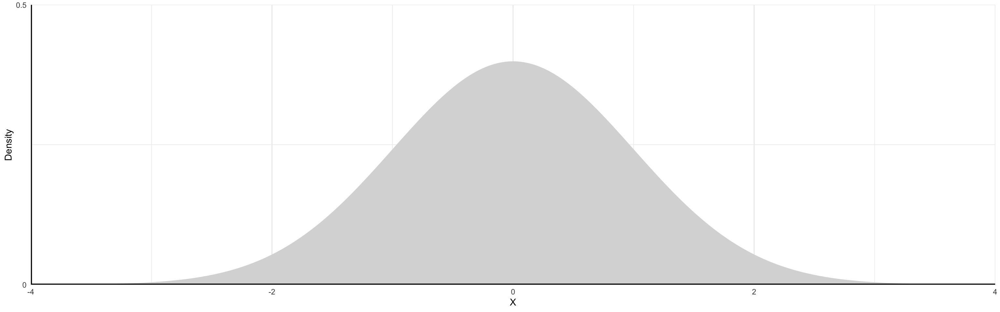

Random Variables
A Random Variable is any variable whose value cannot be predicted exactly. For example:
- The message you get in a fortune cookie
- The amount of time spent searching for your keys
- The number of likes you get on a social media post
- The number of customers that enter a store in a day
All of these are random variables.
Some random variables are discrete and some are continuous
Discrete and Continuous RV
What’s the difference?
Discrete
- Counted
- Take on a small number of possible values
- Ex: Number of M&Ms in your bag
Continuous
- Measured
- Can take on an infinite number of possible values
- Ex: How heavy your bag is
Variables can also be categorical instead of numeric. They may represent qualitative data that can be divided into categories or groups. For now, we will lump them in with discrete variables
Discrete Probability Distributions
Consider the event of a dice roll. This action produces a discrete random variable.
It could take on values 1 to 6 and, if it is a fair die, it takes on each of those values with equali probability \(1/6\).
Our notation will be:
- \(X\) is the random variable, \(x_{i}\) is a potential outcome for \(X\), and each potential outcome \(x_{i}\) happens with probability \(p_{i}\)
| \(p_{i}\) |
1/6 |
1/6 |
1/6 |
1/6 |
1/6 |
1/6 |
|
Discrete Probability Distributions
Consider another random variable \(X\) to be the sum of two dice rolls. In the table below, the first row represents the potential outcomes for the first roll and the first column represents the potential outcomes for the second roll. The values inside the table represent the potential outcomes for \(X\) (the sum)
| 1 |
2 |
3 |
4 |
5 |
6 |
7 |
| 2 |
3 |
4 |
5 |
6 |
7 |
8 |
| 3 |
4 |
5 |
6 |
7 |
8 |
9 |
| 4 |
5 |
6 |
7 |
8 |
9 |
10 |
| 5 |
6 |
7 |
8 |
9 |
10 |
11 |
| 6 |
7 |
8 |
9 |
10 |
11 |
12 |
Each of the cells occur with equal probability. So that X = 2 has probability 1/36. X = 3 has probability 2/36, as it can occur in two ways.
Expected Values of Discrete Random Variables
The expected value of a random variable is its long-term average.
We will use the greek letter \(\mu\) (“mew”) to refer to expected values. That is, we will say that the expected value of \(X\) is \(\mu_{X}\), or equivalently, \(E[X] = \mu_{X}\).
If the variable is discrete, you can calculate its expectation by taking the sum of all possible values of the random variable, each multiplied by their corresponding probabilities.
We write this as:
\[
E[X] = \sum_{i} x_{i}p_{i}
\]
Where \(x_{i}\) is a potential outcome for \(X\) and \(p_{i}\) is the probability that outcome occurs
Expected Value Rules
Here are some very important math rules to know about the way expected values work. Let \(X\),\(Y\), and \(Z\) be random variables and let \(b\) be a constant.
- The expectation of the sum of several RVs is the sum of their expectation: \[
E[X + Y + Z] = E[X] + E[Y] + E[Z]
\]
- Constants can pass outside of an expectation: \[
E[bX] = bE[X]
\]
- The expected value of a constant is that constant: \[
E[b] = b
\]
Definition
The covariance of two random variables \((\sigma_{XY})\) is a measure of the linear association between those variables. For example, since people who are taller are generally heavier, we would say that the random variables height and weight have a positive covariance. On the other hand, if large values for one random variable tend to correspond to small values in the other, we would say the two variables have a negative covariance. Two variables are independent have a covariance of 0.
The formula is:
\[
Cov(X,Y) = \sigma_{XY} = E[(X - \mu_{X})(Y - \mu_{Y})]
\]
Notice that the covariance of a random variable \(X\) with itself is the variance of \(X\)
Rules
Some important rules about the way variance works. Let \(X\),\(Y\), and \(Z\) be random variables and let \(b\) be a constant.
The covariance of a random variable with a constant is 0 \[
Cov(X,b) = 0
\]
The covariance of a random variable with itself is its variance: \[
Cov(X,X) = Var(X)
\]
Constants can come outside of the covariance: \[
Cov(X,bY) = bCov(X,Y)
\]
If \(Z\) is a third random variable, we write: \[
Cov(X,Y + Z) = Cov(X,Y) + Cov(X,Z)
\]
Definition
An issue with covariance is that the covariance between two random variables depends on the units those variables are measured in. That’s where correlation comes in:
Correlation is another measure of linear association that has the benefit of being dimensionless because the units in the numerator cancel with the units in the denominator.
It is also the case that the correlation between two variables is always between -1 and 1. Where correlation = 1, the two variables have a perfect positive linear relationsihp, and when correlation = -1, the two variables have a perfect negative linear relationship.
We will use the greek letter \(\rho\) (“rho”) to refer to the correlation between two RVs. The formula is:
\[\begin{align*}
\rho_{XY} =
\dfrac{
\sigma_{XY}
}{
\sqrt{\sigma_{X}^{2}\sigma_{Y}^{2}}
}
\end{align*}\]
Continuous Random Variables
Probabilities of Continuous RVs
When the variable can take on an infinite number of possible values, the probability it takes on any given value must be zero.
The variable takes so many values that we cannot count all possibilities, so the probability of any one particular value is zero.
We can use probability density functions (PDFs) to help describe continuous RVs of which there are many but we will give emphasis to two:
- Uniform Distribution
- Normal Distribution
Distributions
A distribution is a function that represents all outcomes of a random variable and the corresponding probabilities. It is:
- A summary that describes the spread of data points in a set
- Essential for making inferences and assumptions from data
Key Takeaway: The shape of a distribution provides valuable information of the data
Normal Distribution
This is commonly called a “bell curve”. It is:
- Symmetric: Mean and median occur at the same point (i.e. no skew)
- Low-probability events are in the tails
- High-probability events are near the center

Normal Distribution
The shaded area illustrates the probability of the event \(-2 \leq X \leq 2\) occurring
- To “find the area under the curve” we use integral calculus (or, in practice ).
\[
P(-2 \leq X \leq 2) \approx 0.95
\]

Normal Distribution
Continuous distribution where \(x_{i}\) takes the value of any real number \((\mathbb{R})\)
- The domain spans the entire real line
- Centered on the distribution mean \(\mu\)
A couple of important rules to recall:
- The probability that the random variable takes a value \(x_{i}\) is 0 for any \(x_{i} \in \mathbb{R}\)
- The probability that the random variable falls between \([x_{i},x_{j}]\) range, where \(x_{i} \neq x_{j}\), is the area under \(p(x)\) between those two values.
The area highlighted in the previous graph represents \(p(x) = 0.95\). The values \({-1.96,1.95}\) represent the 95% confidence interval for \(\mu\)
Primary Differences in Expected Values by RV Type
To find the expected value or variance of a continuous random variable instead of a discrete random variable, we just swap integrals for sums and the PDF \(f(X)\) for \(p_{i}\):
| Discrete |
\(\sum_{i=1}^{n} x_{i}p_{i}\) |
\(\sum_{i=1}^{n} (x_{i} - \mu_{X})^{2} p_{i}\) |
| Continuous |
\(\int X f(X) dX\) |
\(\int (X - \mu_{x})^{2} f(X) dX\) |